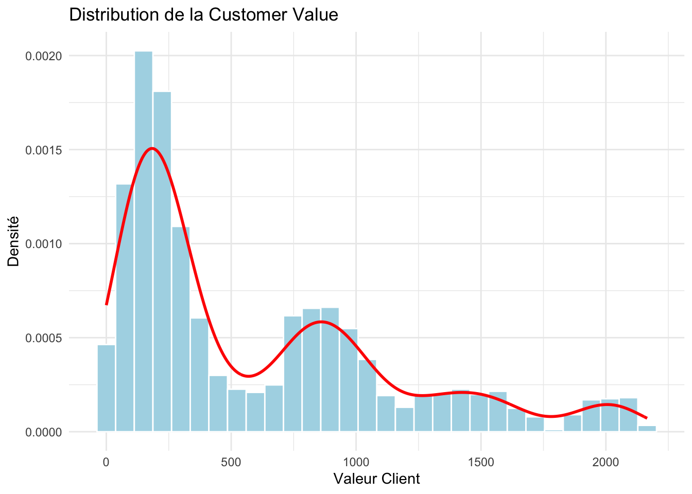
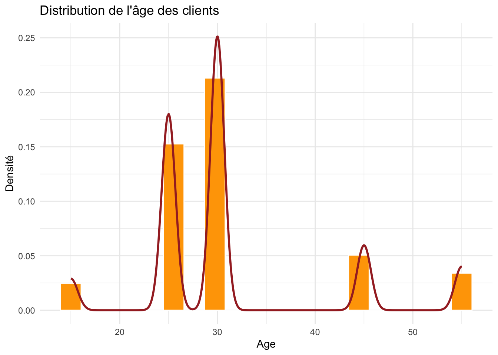
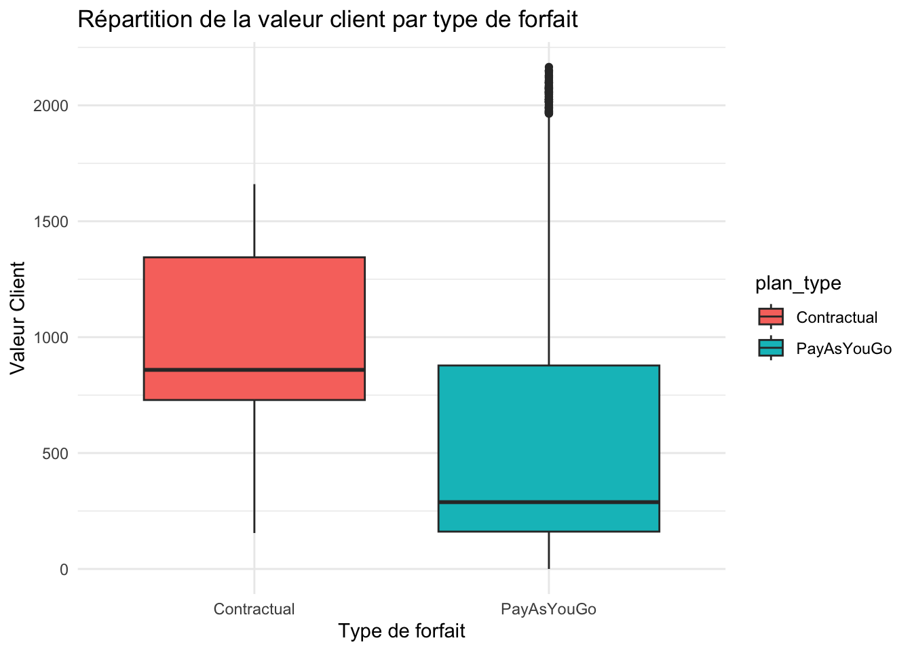
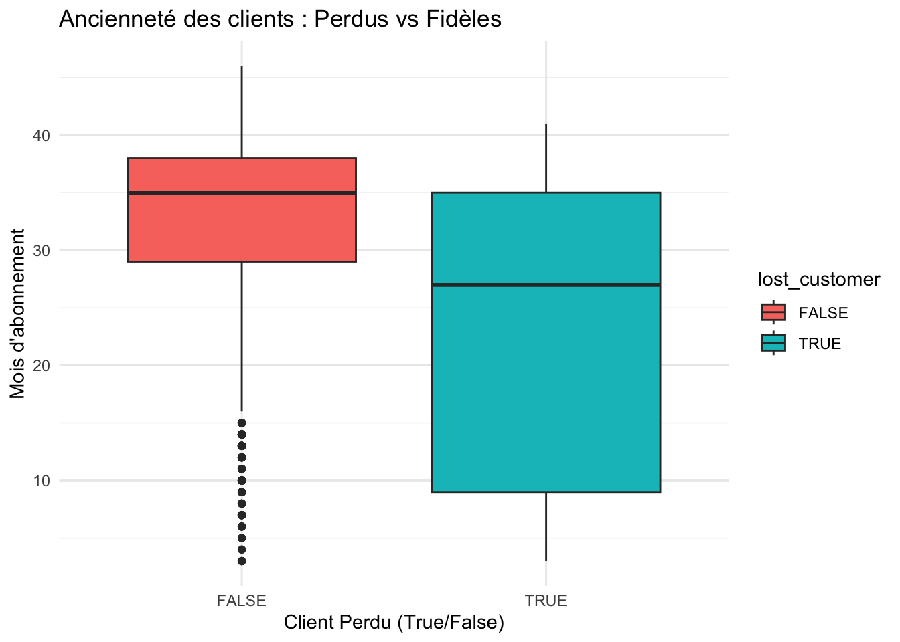
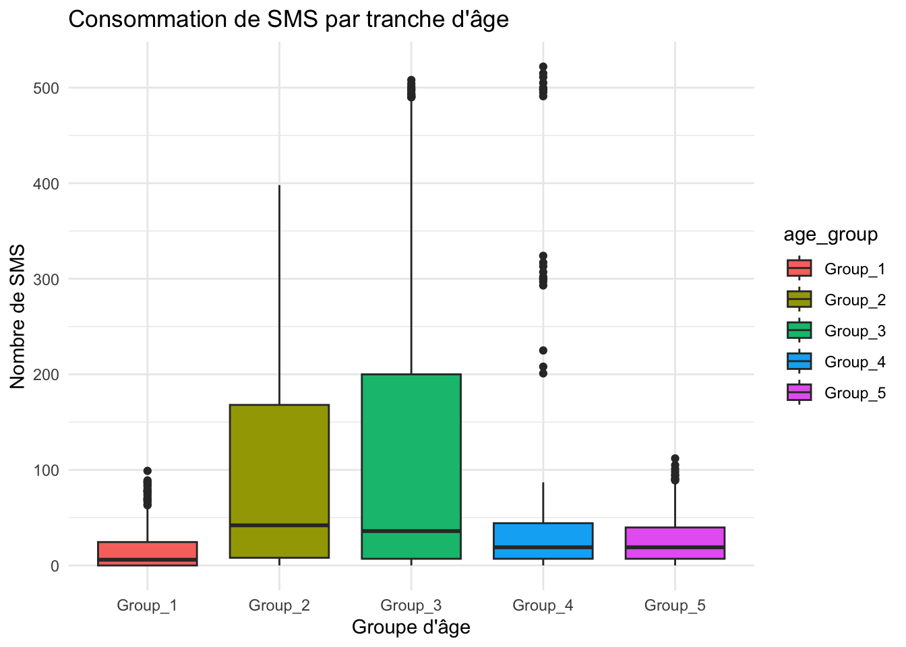
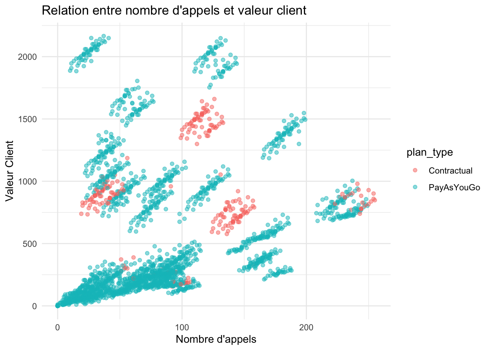
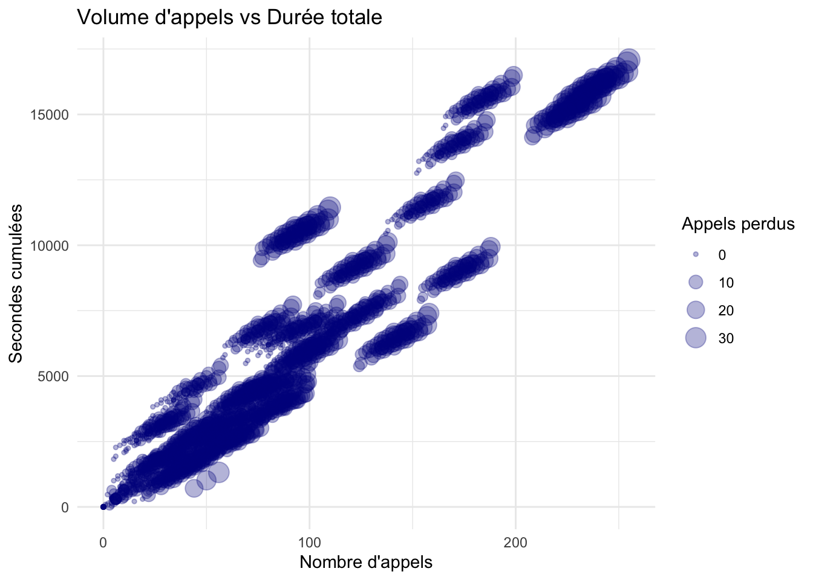
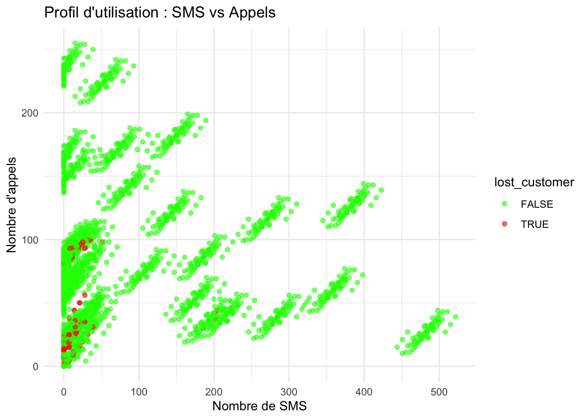
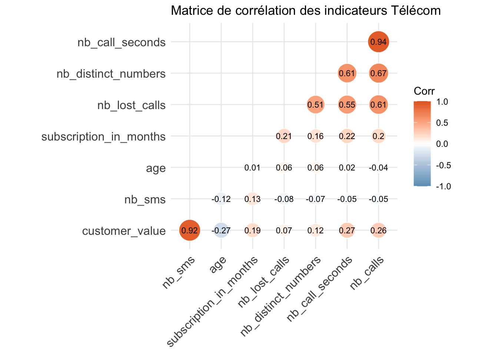

Ce document R Quarto va vous guider dans l’exploration d’un jeu de données lié à l’industrie des Télécoms avec le langage de programmation R et de ses librairies.
Etape 1: chargement des librairies R
Identifier et charger les libraries R qui vont vous être utile à lire et explorer les fichiers de données.
library(tidyverse)
Warning: package 'ggplot2' was built under R version 4.5.2
Warning: package 'tibble' was built under R version 4.5.2
Warning: package 'tidyr' was built under R version 4.5.2
Warning: package 'readr' was built under R version 4.5.2
Warning: package 'purrr' was built under R version 4.5.2
── Attaching core tidyverse packages ──────────────────────── tidyverse 2.0.0 ──
✔ dplyr 1.1.4 ✔ readr 2.1.6
✔ forcats 1.0.1 ✔ stringr 1.6.0
✔ ggplot2 4.0.1 ✔ tibble 3.3.1
✔ lubridate 1.9.4 ✔ tidyr 1.3.2
✔ purrr 1.2.1
── Conflicts ────────────────────────────────────────── tidyverse_conflicts() ──
✖ dplyr::filter() masks stats::filter()
✖ dplyr::lag() masks stats::lag()
ℹ Use the conflicted package (<http://conflicted.r-lib.org/>) to force all conflicts to become errors
library(ggcorrplot)library(here)
here() starts at /Users/Lucas-Pro/Downloads/NEXA_Cours_R_Projet
Etape 2: chargement du jeu de données nettoyé
Charger le fichier que vous avez sauvegardé en fin de la partie 1a.
Rows: 2368 Columns: 13
── Column specification ────────────────────────────────────────────────────────
Delimiter: "\t"
chr (4): customer_id, age_group, plan_type, complain_registered
dbl (8): age, customer_value, subscription_in_months, nb_call_seconds, nb_ca...
lgl (1): lost_customer
ℹ Use `spec()` to retrieve the full column specification for this data.
ℹ Specify the column types or set `show_col_types = FALSE` to quiet this message.
Cette partie va être dédiée à la visualisation de données avec la librarie ggplot2.
Construire des histogrammes pour 3 variables numériques
Ajouter en superposition la densité de la distribution (voir la fonction geom_density()) N’oubliez pas de commenter chaque graphique avec vos observations.
ggplot(df_data, aes(x = customer_value)) +geom_histogram(aes(y =after_stat(density)), bins =30, fill ="lightblue", color ="white") +geom_density(color ="red", linewidth =1) +labs(title ="Distribution de la Customer Value", x ="Valeur Client", y ="Densité") +theme_minimal()

vos commentaires:
La distribution est asymétrique a plupart des clients ont une valeur faible ou moyenne, mais quelques gros clients, très rentables, font augmenter la moyenne.
# Histogramme de la durée des appelsggplot(df_data, aes(x = nb_call_seconds)) +geom_histogram(aes(y =after_stat(density)), bins =30, fill ="lightgreen", color ="white") +geom_density(color ="darkgreen", linewidth =1) +labs(title ="Distribution de la durée des appels", x ="Durée (secondes)", y ="Densité") +theme_minimal()
vos commentaires:
Ce graphique montre l’usage de la voix. Une courbe en cloche indique un usage normal, tandis que plusieurs pics peuvent révéler différents profils d’utilisateurs (peu d’appels vs beaucoup d’appels).
ggplot(df_data, aes(x = age)) +geom_histogram(aes(y =after_stat(density)), bins =20, fill ="orange", color ="white") +geom_density(color ="brown", linewidth =1) +labs(title ="Distribution de l'âge des clients", x ="Age", y ="Densité") +theme_minimal()

vos commentaires:
La distribution de l’âge semble montrer des pics spécifiques.
La base clients est donc majoritairement Adulte. On observe aussi des groupe d’age qui est cohérent avec la réalitée des données
Construire un boxplot
Sélectionner 3 combinaisons de variables numériques et de variables catégoriques, afin de construire 3 boxplots différents. Vous pouvez utiliser le paramètre de couleurs pour visualiser une variable catégorique supplémentaire.
N’oubliez pas de commenter chaque graphique avec vos observations.
ggplot(df_data, aes(x = plan_type, y = customer_value, fill = plan_type)) +geom_boxplot() +labs(title ="Répartition de la valeur client par type de forfait",x ="Type de forfait", y ="Valeur Client") +theme_minimal()

vos commentaires:
Ce graphique permet de comparer la rentabilité entre les forfaits “PayAsYouGo” et les autres.
ggplot(df_data, aes(x = lost_customer, y = subscription_in_months, fill = lost_customer)) +geom_boxplot() +labs(title ="Ancienneté des clients : Perdus vs Fidèles",x ="Client Perdu (True/False)", y ="Mois d'abonnement") +theme_minimal()

vos commentaires:
On peut vérifier si les clients qui partents ont des clients récents ou des clients fidèles de longue date.
ggplot(df_data, aes(x = age_group, y = nb_sms, fill = age_group)) +geom_boxplot() +labs(title ="Consommation de SMS par tranche d'âge",x ="Groupe d'âge", y ="Nombre de SMS") +theme_minimal()

vos commentaires:
On s’attend à ce que le plus jeune groupe ait une médiane de SMS plus élevée que les groupes plus âgés.
Construire un scatterplot
Sélectionner 3 paires de variables numériques pour construire 3 scatterplots différents. Illustrer aussi comment les paramètres de couleur et de taille peuvent être utilisés. N’oubliez pas de commenter chaque graphique avec vos observations.
ggplot(df_data, aes(x = nb_calls, y = customer_value, color = plan_type)) +geom_point(alpha =0.5) +labs(title ="Relation entre nombre d'appels et valeur client",x ="Nombre d'appels", y ="Valeur Client") +theme_minimal()

vos commentaires:
On observe une corrélation positive : plus un client passe d’appels, plus sa valeur générée est élevée.
ggplot(df_data, aes(x = nb_calls, y = nb_call_seconds, size = nb_lost_calls)) +geom_point(alpha =0.3, color ="darkblue") +labs(title ="Volume d'appels vs Durée totale",x ="Nombre d'appels", y ="Secondes cumulées", size ="Appels perdus") +theme_minimal()

vos commentaires:
La taille des points indique les appels perdus. On peut voir si les gros utilisateurs subissent plus de problèmes techniques.
ggplot(df_data, aes(x = nb_sms, y = nb_calls, color = lost_customer)) +geom_point(alpha =0.6) +scale_color_manual(values =c("green", "red")) +labs(title ="Profil d'utilisation : SMS vs Appels",x ="Nombre de SMS", y ="Nombre d'appels") +theme_minimal()

vos commentaires:
Ce graphique permet de voir si les clients qui partent en crouge ont un profil d’utilisation spécifique
Construire une matrice de corrélation et sa réprésentation graphique.
Utilisation de la fonction ‘cor()’ sur les variables numériques, et de la fonction ggcorplot() pour sa représentation.
Sélectionner les paramètres de ‘ggcorplot’ pour ne representer les corrélations que dans la partie basse de la matrice, sans la diagonale. Ajouter le coéfficient de corrélation pour chaque cellule. Indiquer un titre explicite à votre visualisation.
N’oubliez pas de commenter chaque graphique avec vos observations.
# 1. Sélection des colonnes numériques uniquementdf_num <- df_data %>%select(where(is.numeric))# 2. Calcul de la matrice de corrélationcorr_matrix <-cor(df_num, use ="complete.obs")# 3. Visualisation avec ggcorrplotggcorrplot(corr_matrix, hc.order =TRUE, type ="lower", # Uniquement la partie basselab =TRUE, # Afficher les coefficientslab_size =3, method ="circle", colors =c("#6D9EC1", "white", "#E46726"), title ="Matrice de corrélation des indicateurs Télécom", outline.color ="white")
Warning: `aes_string()` was deprecated in ggplot2 3.0.0.
ℹ Please use tidy evaluation idioms with `aes()`.
ℹ See also `vignette("ggplot2-in-packages")` for more information.
ℹ The deprecated feature was likely used in the ggcorrplot package.
Please report the issue at <https://github.com/kassambara/ggcorrplot/issues>.

vos commentaires:
Les coefficients proches en orange foncé indiquent une forte corrélation positive .
Les valeurs proches de 0 indiquent une absence de lien linéaire.
C’est un outil puissant pour identifier les variables prédictives pour la suite de l’analyse.